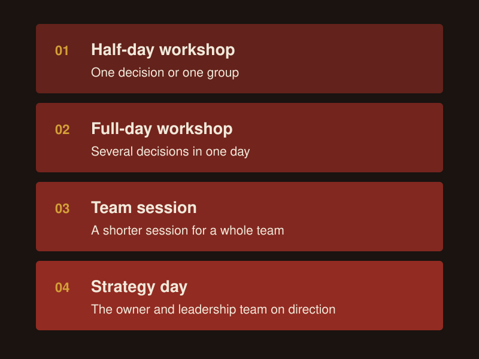
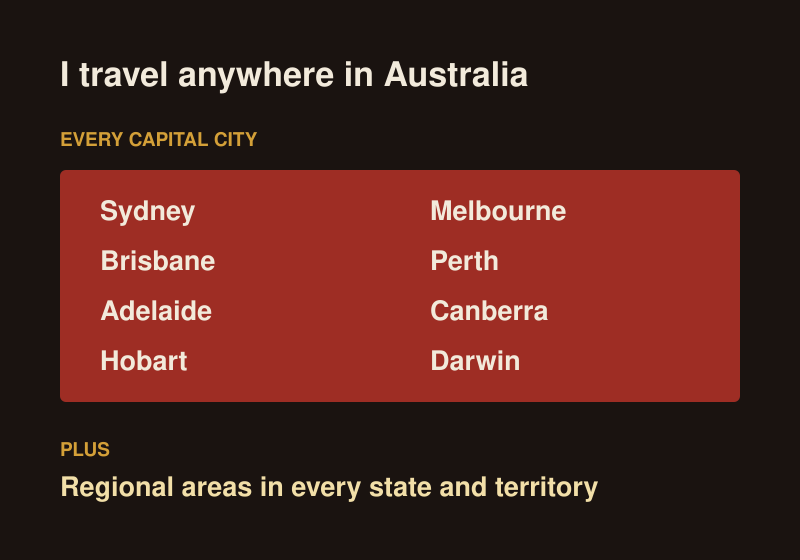

In-Person NDIS Workshops and Strategy Days, Anywhere in Australia
I run in-person workshops, strategy days and team sessions for NDIS and aged care providers anywhere in Australia. I'm based on the NSW Central Coast and I travel to you, whether that's Sydney, Melbourne, Brisbane, Perth, Adelaide or a regional town. CL Growth Academy is a boutique NDIS marketing agency, and the sessions cover the growth side of your business: marketing, referrals, AI and how your team handles enquiries.
When a provider asks where I am, my answer is the same one I gave a CEO in July: "on the central coast but I can come to you guys, that's not a problem."
What is an in-person NDIS workshop?
It's a facilitated session at your office, or a venue near your team, where your owners, leaders and staff work through one real decision together and leave with a written plan. Every session starts with pre-work and ends with written follow-up. The full method, from the pre-work pack to the ranked 90-day roadmap, is on my coaching and workshops page, so I won't repeat it here.
There are four formats:
- Half-day workshop. One decision or one group, such as your intake team on enquiry calls, or your BDMs on referral conversations.
- Full-day workshop. Several decisions in one day, worked through in blocks, with every current activity rated Continue, Park or Update.
- Team session. A shorter session for a whole team, for example a referral session where staff write down a referral partner's week and then role-play the ask in pairs.
- Strategy day. A full day with the owner and leadership team on the direction of the business: who you're for, what you'll focus on for the next 90 days, and who owns each priority.
When is in-person worth it?
In person is worth the travel when the people who need to decide, and the people who carry out the decision, can all be in one place for the day. It suits:
- A strategy day where the owner, finance and operations leads all have to agree before anything moves.
- A team session with role-play, where staff practise the referral conversation in pairs with the whole team in one place.
- Frontline staff, support workers and coordinators, who talk to families, OTs and hospital teams every week and can practise the ask together on the day.
- A first session with a new leadership team, where putting a face to a name helps.
Online suits regular coaching, short follow-ups and anyone who can't travel. Staff who can't attend the day, including offshore and part-time staff, still have a say through the staff questionnaire in the pre-work. Monthly coaching can run online, and in my experience a short slot every month does more than a single big session.

Where do you run in-person workshops?
I travel anywhere in Australia. So far I've run workshops and strategy days in person across Sydney, including Western Sydney, and I've spoken at sector summits in Sydney, Melbourne and on the Gold Coast. I've worked with providers from Perth to Brisbane.
I come to you in:
- Every capital city: Sydney, Melbourne, Brisbane, Perth, Adelaide, Canberra, Hobart and Darwin.
- Regional areas in every state and territory, including Newcastle and the Hunter, the Central Coast, Wollongong, the Gold Coast and regional Victoria, Queensland, South Australia, Western Australia and Tasmania.
If your team is spread across more than one state, we pick one location for the day and bring the rest of your staff in through the pre-work and the follow-ups.

How does booking work?
Booking starts with a call, and I plan the day around your team. The steps:
- Book a free growth audit. I reply to every enquiry within one business day, and the first call is 30 minutes.
- I recommend the format, a half day, full day, team session or strategy day, and send a quote.
- We agree the date and the location. Book 3 to 4 weeks ahead of the day you want. I come to your office, or we use a venue near your team. We agree the venue and who books it case by case.
- Your team completes the pre-work. I need it 3 to 4 days before the day so I can review it properly.
- I run the session, then send the written strategy and book the 1:1 follow-ups.
FAQ
Do you run NDIS marketing workshops in Sydney and Melbourne?
Yes. I run in-person workshops, strategy days and team sessions for NDIS and aged care providers in Sydney, Melbourne and every other capital city, plus regional areas. I'm based on the NSW Central Coast and travel to your team.
Can you come to our office?
Yes. I come to your office, so your team doesn't have to travel. If your office doesn't have room for the whole team, we run it at a venue near your team. We agree the venue and who books it case by case.
Do you also run sessions online?
Yes. Workshops and coaching run in person or online. Monthly coaching and short follow-ups can run online, and staff who can't attend an in-person day take part through the pre-work questionnaire.
How far ahead do we need to book?
Book 3 to 4 weeks ahead of the day you want. Start with a free growth audit, so we can agree the format and the date. Your team then completes the pre-work, and I need it 3 to 4 days before the day to review it properly.
Do you run in-person workshops for aged care providers?
Yes. I work with NDIS and aged care providers, and the same formats work for both: a half day, a full day, a team session or a strategy day, with pre-work before and a written plan after.
Book an in-person workshop
Book a free growth audit and I'll tell you which format fits, where we should run it and what your team needs to prepare. For the channels themselves, from SEO and ads to referrals and LinkedIn, see how I approach NDIS marketing.